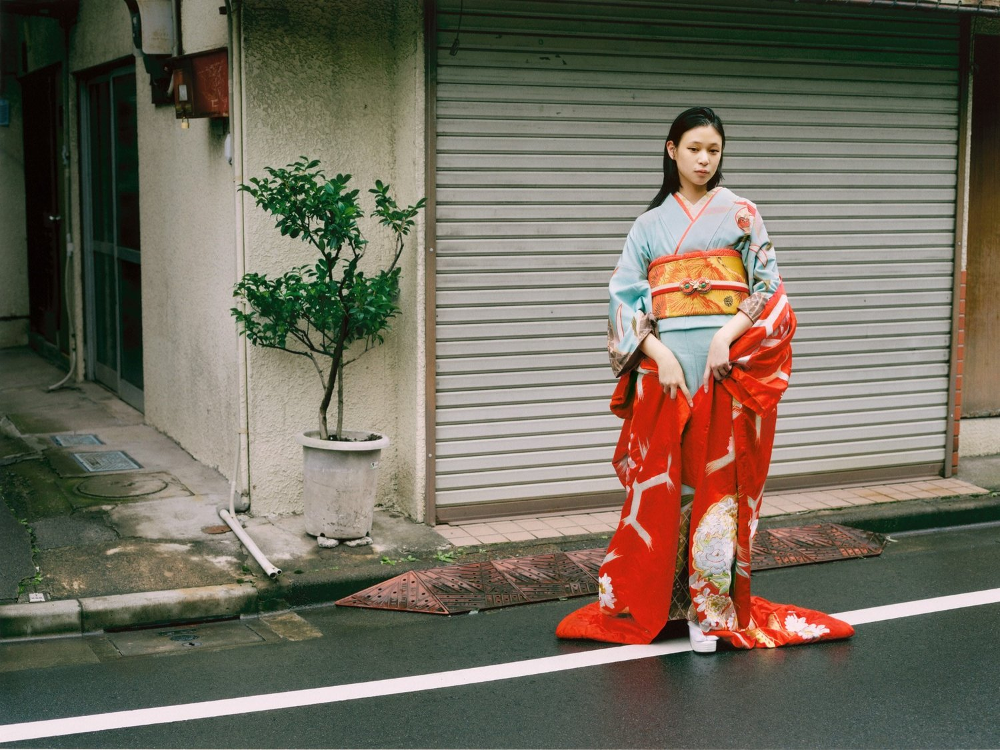

KIMONO
It is no stranger to anyone and most already know what
culture this
clothing is associated with. The
Kimono is a
traditional historical Japanese garment that women in
ancient Japan would (and
still)
wear for various occasions.
In the present day, the kimono is not typically worn as an
everyday
dress and has steadily fallen out of fashion as the
most common garment for a Japanese person to
own
and
wear. There are distinct styles of Kimonos that the Japanese
wear for certain occasions
such as
weddings and funerals
and specific ways to wrap the cultural garments.
African Women’s Crowning Glory
Nigerian actress, Ini Edo | source: Nollywood Community
African women wear their “headgear” and fashion accessories with such dignity and pride, that their audience is often left breathless.
27 April 2023

photographer: Lauren Fletcher for Gaschette Magazine
The style, shape, form, texture, and vibrancy of the colours – everything about the African women’s headgear is just plain stunning.
27 April 2023
Gorgeous Turban Wraps
The application of turban goes down in history of the African culture. It is a fashion supplement which displays the descendants of kings, queens and warriors in other continents. Service is being provided to the African culture and black community when fashion adopts these wraps.
27 April 2023
INDIAN CULTURAL ICON: THE SAREE

A small bindi can add a lot of charm to your beauty. Alia dressed beautifully
in Madhurya creations green saree for
the promotional event of her film RRR. The actress
completed
her look with a cute black bindi, kohl, and gajra.
Since the beginning of time, kurtas have been a staple outfit
for Indian men. A s the kurta
pajama
gained massive popularity
over the years and made its mark in men's traditional fashion,
kurtas for
men have evolved to include the latest trends.
Initially worn with the dhoti, today, kurtas are
widely worn
with more practical, comfortable lowers like pajamas,
churidars, and salwars.